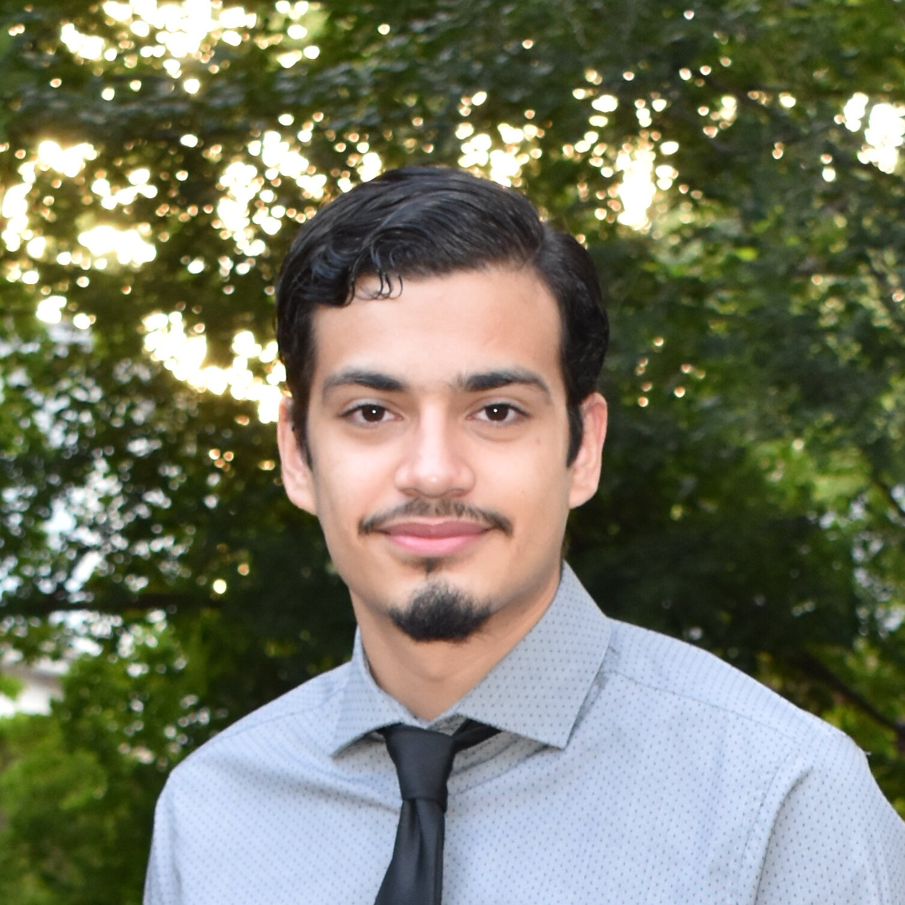

Who I Am
My name is Ruben, and I'm currently a second year at Madison Area Technical College. I study under the web software developer program, and it has been a thrill to finally be taking the steps towards becoming a true developer.
Born and raised in the Chicagoland area, I recently moved to Madison WI for family related reasons. I come from a family of immigrants who have found great success here in the US, and I hope to continue that tradition.
Through Madison College, I have learned the fundamentals of various technogies, including JavaScript, MySQL, PHP, HTML, and CSS. My current strongest language is Java, which I have been learning since high school and continue to learn in college. I also have some slight background in Python and Swift IOS
Language can be hard, and I'm sure everyone can agree that sometimes words just aren't what we want to use to express ourselves. Over the years I've tried a variety of interests to express who I am; Music, art, skateboarding, and most importantly, technology. Even when I was just a child, computers fascinated me. When I learned about programming, it seemed like the perfect way to turn my interest into a way to express creativity and exercise critical thinking.
My goal as a developer is to work with others who share the same interest in technology to create practical, complex, and impressive software and webapps. I am always looking to expand my knowledge and learn new technologies.
If you would like to reach out, please don't hesitate to contact via LinkedIn